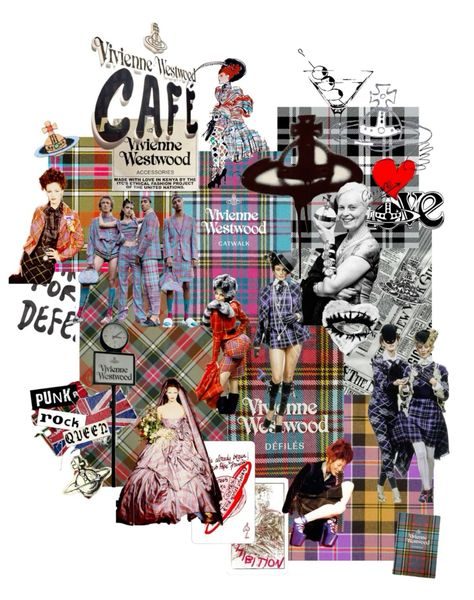

Dressing for yourself is a really important act that extends beyond simply picking out my clothes It's about matching your exterior appearance to your inner self, expressing your uniqueness, and being comfortable and confident in your own skin. When you dress for you as a person you stop focusing on others' thoughts or expectations and instead develop a look that reflects your personality and helps you feel genuine. Clothing can be used for self-expression, to set the tone for the day, or even as an emotional shield to help you confront the world. When you dress in a style that is authentic to who you are, you may walk with confidence and self-assurance, regardless of external judgments.I have definitely struggled with this concept in the past. Growing up, I was frequently swayed by the opinions of others, constantly striving to fit into trends or styles that did not truly reflect my personality. Whether I was wearing what I thought would make me fashionable or picking outfits that conformed to the community norms, I frequently felt alienated from my clothing. It wasn't until recently that I came to embrace the concept of dressing for myself, preferring comfort and authenticity to conformity. Now, when I dress, I try to focus on what makes me happy rather than how others see me. It's been a long journey of self-acceptance, and I'm learning that dressing for me isn't just about fashion.
>